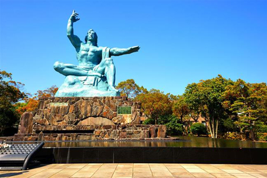
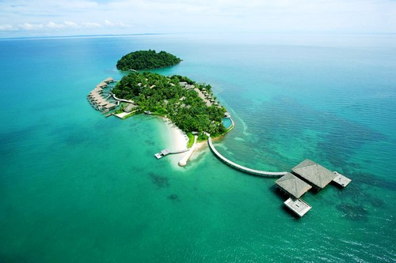
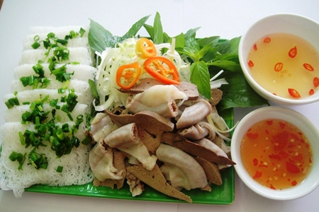

Tin Tức Du Lịch

Trải nghiệm Kyushu chỉ với 29,99 triệu
23/06/2015 08:00:00
Hè này, Nhật Bản trở nên hấp dẫn hơn bao giờ hết bởi đường tour mới “Trải nghiệm vẻ đẹp đảo Kyushu” (5 ngày) với giá trọn gói chỉ 29,99 triệu đồng, khách sạn từ 3 sao trở lên, chất lượng dịch vụ không đổi. Bạn sẽ có cơ hội khám phá nhiều điểm đến mới hấp dẫn nhất từ thành phố Fukuoka, Nagasaki, đến Beppu. Đây là đường tour khuyến mại với giá “cực sốc” và duy nhất chỉ có tại Vietravel.

Hè rực rỡ tại Koh Rong Samloem
22/06/2015 08:00:00
Bạn không cần bỏ ra quá nhiều tiền để đến Hawaii hay Maldives tận hưởng kỳ nghỉ nơi thiên đường biển xanh, mà chỉ với 4 triệu đồng là bạn đã có những trải nghiệm tuyệt vời với cát trắng, nắng vàng và biển xanh. Phố biển Sihanouk Ville và hòn đảo xinh đẹp Koh Rong Samloem ở Campuchia sẽ là địa chỉ tuyệt vời để bạn cùng gia đình “trốn nóng” trong mùa hè “rực lửa” này.
“Cháy” cùng Arsenal tại Barclays Asia Tropy 2015
19/06/2015 09:16:46
Sau SEA Games 28, từ 15/7 - 18/7/2015 đảo quốc sư tử tiếp tục trở thành tâm điểm của người hâm mộ Đông Nam Á với giải đấu Barclays Asia Trophy 2015 cùng sự góp mặt của ba đội bóng hàng đầu Anh quốc. Các tên tuổi lớn như Arsenal, Everton, Stoke City sẽ làm thỏa lòng khán giá bằng những trận đấu đỉnh cao.
